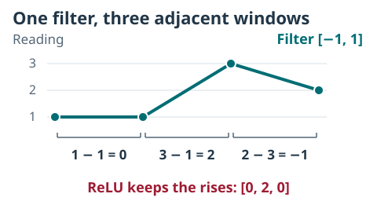

A light sensor on a desk records four readings, one each second. A steady lamp and a flickering lamp can have the same average brightness. What should a model carry forward from one layer to the next so it can tell them apart?
A representation is a set of numbers a model uses in place of the original observations. You can test what it loses by finding two inputs that give exactly the same numbers.
Worked example
Record A is [1, 1, 3, 3]. Record B is [2, 2, 2, 2]. Their means are both 2. A detector that sees only the mean must give them the same answer. Their changes between consecutive readings tell different stories.
Formal notation
Let x₁, …, x₄ be four readings. The mean is (x₁ + x₂ + x₃ + x₄)/4. The change at position i is dᵢ = xᵢ₊₁ − xᵢ.
Could a complicated classifier recover the changes from just these two means?
Reveal answer
No. It receives the same input value 2 in both cases. It would need another measurement or a more informative representation.
Slide one detector along the record
A filter is a short list of weights. Slide it across the record and reuse those weights at each position. A convolutional layer in PyTorch performs this sliding weighted sum. Sharing weights lets the same feature be recognized at several locations.
Worked example
With four readings and a two-reading filter, the windows start at positions 1, 2 and 3. Applying [−1, 1] to [1, 1, 3, 2] gives 0, 2, −1. ReLU keeps only increases. Reversing the signs gives a second channel that detects decreases.
Formal notation
With no extra readings at the ends and a one-position step, length L becomes L − K + 1 for a filter of length K. A channel is the sequence from one filter.

import torch
from torch.nn.functional import conv1d
x = torch.tensor([[[1., 1., 3., 2.]]]) # batch, channel, time
filters = torch.tensor([[[-1., 1.]], [[1., -1.]]])
features = conv1d(x, filters).relu()
print("shape", list(features.shape))
print("rise and fall channels", features[0].tolist())
Reveal the output
shape [1, 2, 3]
rise and fall channels [[0.0, 2.0, 0.0], [0.0, 0.0, 1.0]]
Check your understanding
Why does the shape have two channels but only three time positions?
Reveal answer
We used two filters. Each filter has three places where its entire two-reading window fits. The batch still contains one record.
Combine the strongest rise and fall
A later layer can use features from an earlier layer. Here the first layer finds each upward or downward change. The next layer chooses the strongest rise and strongest fall, then scores their combination. A high score under this example rule means the record moved substantially in both directions or very strongly in one direction.
Worked example
On [1, 1, 3, 2], the strongest rise is 2 and the strongest fall is 1. The final unit adds them and subtracts 2.5, giving 0.5. These weights are supplied so you can inspect each stage. The score is a decision score, not a probability.
Formal notation
With rise r and fall f, the readout is s = r + f − 2.5. Predict class 1 if s > 0. The final two coordinates have kept magnitudes and discarded locations.
import torch
from torch import nn
from torch.nn import functional as F
extract = nn.Conv1d(1, 2, kernel_size=2, bias=False)
readout = nn.Linear(2, 1)
with torch.no_grad():
extract.weight.copy_(torch.tensor([[[-1., 1.]], [[1., -1.]]]))
readout.weight.fill_(1.)
readout.bias.fill_(-2.5)
x = torch.tensor([[[1., 1., 3., 2.]]])
local = F.relu(extract(x))
pooled = local.amax(dim=2)
print("local", local.tolist(), "pooled", pooled.tolist())
print("score", readout(pooled).item())
Reveal the output
local [[[0.0, 2.0, 0.0], [0.0, 0.0, 1.0]]] pooled [[2.0, 1.0]]
score 0.5
Check your understanding
What ambiguity remains if the final unit sees only [strongest rise, strongest fall]?
Reveal answer
It cannot tell when either occurred. A rise followed by a fall and a fall followed by a rise can give the same two magnitudes. A task that depends on order needs a representation that retains position.
What does depth buy?
Depth means that one transformation acts on the result of another. If every stage only multiplies by a weight and adds a bias, the whole chain is a single straight line. A nonlinear activation changes that. A later unit can act differently on different parts of the input.
Worked example
Let t be a normalized brightness from 0 to 1. Make a triangular detector that is zero at 0 and 1 and peaks at 0.5. Feed that detector through an identical second stage. The new response has peaks at 0.25 and 0.75. Each stage reuses the same small computation.
Formal notation
On 0 ≤ t ≤ 1, g(t) = 2t − 4 max(0, t − 0.5). Writing g(g(t)) means first calculate g(t), then use that result as the new input.
one stage [0.0, 0.5, 1.0, 0.5, 0.0]
two stages [0.0, 1.0, 0.0, 1.0, 0.0]
Check your understanding
Why would two affine layers lack this behavior?
Reveal answer
Substituting a₁t + b₁ into a₂u + b₂ gives (a₂a₁)t + (a₂b₁ + b₂), still a straight line. ReLU introduces the bend that lets another stage split the response again.
Learn a detector from examples
So far we chose the weights. To learn a representation, let the loss change a weight inside the feature extractor. In a small calibration task a sensor reports a change only half as large as a reference instrument. Learn how much to multiply a rising change by.
Worked example
The observed increases are 1, 2 and 3. A reference instrument measures 2, 4 and 6. Starting at gain 0.5, form estimates, average the squared errors, then update the gain using its gradient. Inspect the feature for an increase of 2 before and after fitting.
Formal notation
The hidden response is h = max(0, w · d), where d is the observed change and w is the gain. The loss is the average of (h − y)² over reference measurements y.
import torch
change = torch.tensor([1., 2., 3.])
reference = torch.tensor([2., 4., 6.])
gain = torch.tensor(0.5, requires_grad=True)
opt = torch.optim.SGD([gain], lr=0.05)
for step in range(21):
features = (gain * change).relu()
loss = (features - reference).square().mean()
if step in (0, 20):
print(step, round(gain.item(), 3), round(features[1].item(), 3))
if step < 20:
opt.zero_grad()
loss.backward()
opt.step()
Reveal the output
0 0.5 1.0
20 2.0 4.0
Check your understanding
Why could these three training cases teach the gain but tell us little about falling light?
Reveal answer
All three changes are positive. They constrain the response to increases. Evaluating falls would require falling examples and a representation that can express the desired falling response.
Compare readings on a common scale
Changing from one sensor unit to another changes the numerical size of training updates. One option is to subtract the training mean and divide by the training standard deviation, a measure of spread. Fit those two numbers on the training set and reuse them on later records.
Worked example
The calibration readings 1 and 3 have mean 2 and population standard deviation 1. In standardized units they become −1 and 1. Changing physical units to 100 and 300 gives the same standardized training values. A future reading of 400 is two training standard deviations above the mean.
Formal notation
The standardized value z = (x − μ)/σ uses training mean μ and training spread σ. Constant features need special handling because σ = 0. Here both spreads are positive.
import torch
for training, future in [([1., 3.], 4.), ([100., 300.], 400.)]:
x = torch.tensor(training)
mean, spread = x.mean(), x.std(correction=0)
print("training", ((x-mean)/spread).tolist(),
"future", ((future-mean)/spread).item())
Reveal the output
training [-1.0, 1.0] future 2.0
training [-1.0, 1.0] future 2.0
Check your understanding
Why keep the original training mean when a new bright lamp is measured?
Reveal answer
The model learned in the original coordinate system. Recomputing the scale from the evaluation records would change that system and use information from the evaluation set.
Trace a fading gradient
A gradient measures how sensitive the output is to a small change. The chain rule multiplies local slopes as it moves backward through successive layers. Repeated factors smaller than one can make the signal to early layers tiny.
Worked example
Suppose every layer multiplies its input by 0.5. Six layers turn 1 into 1/64. Increasing the starting value by 0.01 changes the final output by only 0.01/64. That same factor appears when autograd differentiates the output.
Formal notation
For y = aᴸx, L is the number of layers, a is the multiplier, and dy/dx = aᴸ. Real networks can have different slopes across units and examples.
import torch
for depth in (1, 3, 6):
x = torch.tensor(1., requires_grad=True)
y = x
for _ in range(depth):
y = 0.5*y
y.backward()
print(depth, x.grad.item())
Reveal the output
1 0.5
3 0.125
6 0.015625
Check your understanding
What would repeated local slopes of 2 do at depth six?
Reveal answer
They multiply to 2⁶ = 64. The sensitivity grows. Both very small and very large gradients can make training difficult.
Add a route for the input
A residual block learns a correction to its input. The input reaches the sum along two paths. One path copies it directly, while the other computes the correction. Backward sensitivities from those paths add.
Worked example
Compare a correction F(x) = −0.1x used alone with x + F(x). One path alone has slope −0.1. The combined block has slope 0.9. After four steps the sensitivities are 0.0001 and 0.6561 respectively.
Formal notation
For h = x + F(x), dh/dx = 1 + F′(x) for scalar x. A direct addition requires the input and correction to have compatible shapes.
import torch
for skip in (False, True):
x = torch.tensor(1., requires_grad=True)
h = x
for _ in range(4):
correction = -0.1*h
h = h + correction if skip else correction
h.backward()
print("skip", skip, "sensitivity", round(x.grad.item(), 4))
If F(x) = −x, does the direct route guarantee a nonzero gradient?
Reveal answer
No. The two slopes add to 1 − 1 = 0. A direct route can help gradients travel but the learned correction still matters.
Choose an update you can check
An optimizer turns gradients into parameter changes. Stochastic gradient descent (SGD) takes a step in the direction opposite the gradient. The learning rate determines the distance, so the new loss can be larger if the step is too long. With the same examples and initialization, compare rates by measuring the loss after the step. Use a validation set when choosing settings for a real task.
Worked example
For one normalized observation the target gain is 2 and we start at 0. The loss is 4 and its slope is −4. A rate of 0.25 moves to 1 and reduces the loss to 1. A rate of 1.25 moves to 5, increasing loss to 9.
Formal notation
If J(w) = (w − 2)², its slope is J′(w) = 2(w − 2). The update w_new = w − ηJ′(w) uses learning rate η.
Why is one training-loss reduction insufficient evidence for choosing a model?
Reveal answer
It measures the fit on the same observation used for the update. Compare learning behavior over multiple steps and evaluate candidate models on separate validation records.
Train two convolutional layers and inspect their features
Can both filter layers learn from a single label per record? Make three four-reading patterns: steady, rising step, falling step. Label the steady pattern 0 and both steps 1. Each brightness level contributes all three patterns, so mean brightness alone cannot distinguish them. Subtract each record’s own mean to focus attention on its shape.
Worked example
Train on nine records at light levels 3, 5 and 7. At each level use a steady signal and two signals with a two-unit jump. Test on six new records at levels 4 and 6 with three-unit jumps. Before and after training, read the three pooled features for the first steady and rising test examples. The labels guide both filter layers through the same backpropagation you traced in Module 08.
Formal notation
For one batch the shapes are [B,1,4] → [B,4,3] → [B,3,2] after the two filters. ReLU follows each filter. Max pooling keeps one maximum per channel and a linear readout maps the three maxima to a single score. A score above zero predicts a change. Binary cross-entropy trains the scores against the 0/1 labels. Adam adjusts the size of the gradient updates for individual parameters.
import torch
from torch import nn
torch.manual_seed(9)
torch.set_num_threads(1)
# Each shape has mean zero. Adding a level changes the lamp's brightness.
patterns = torch.tensor([[0., 0., 0., 0.], [-1., -1., 1., 1.],
[1., 1., -1., -1.]])
def records(levels, size):
rows = torch.cat([level + size * patterns for level in levels])
return rows[:, None, :], torch.tensor([0., 1., 1.] * len(levels))
x, y = records([3., 5., 7.], 1.)
test, labels = records([4., 6.], 1.5)
# Subtract each record's own mean to focus on change within that record.
def center(rows):
return rows - rows.mean(dim=2, keepdim=True)
model = nn.Sequential(nn.Conv1d(1, 4, 2), nn.ReLU(),
nn.Conv1d(4, 3, 2), nn.ReLU(),
nn.AdaptiveMaxPool1d(1), nn.Flatten(), nn.Linear(3, 1))
def features():
return model[:-1](center(test[:2])).detach()
before = features()
optimizer = torch.optim.Adam(model.parameters(), lr=0.02)
for _ in range(80):
optimizer.zero_grad()
scores = model(center(x)).flatten()
loss = nn.functional.binary_cross_entropy_with_logits(scores, y)
loss.backward()
optimizer.step()
with torch.no_grad():
after = features()
predictions = (model(center(test)).flatten() > 0).float()
print("test labels and predictions:", labels.int().tolist(), predictions.int().tolist())
print("correct: model", int((predictions == labels).sum()), "of", len(labels))
print("correct: always changing", int(labels.sum()), "of", len(labels))
for i, name in enumerate(["steady", "rising"]):
print(name, "before", [round(v, 2) for v in before[i].tolist()],
"after", [round(v, 2) for v in after[i].tolist()])
Reveal the output
test labels and predictions: [0, 1, 1, 0, 1, 1] [0, 1, 1, 0, 1, 1]
correct: model 6 of 6
correct: always changing 4 of 6
steady before [0.0, 0.0, 0.56] after [0.0, 0.0, 2.79]
rising before [0.0, 0.25, 1.27] after [0.0, 8.69, 1.36]
Check your understanding
The model gets six of six right and the rule “always changing” gets four of six. Which part of the result suggests that training changed the representation? What remains untested?
Reveal answer
For the rising example, the second pooled feature changes from about 0.25 to 8.69, while the same feature stays at zero for the steady example. This particular distinction becomes stronger during training. The six predictions test new levels and jump sizes at a fixed jump position. They give no measured result for gradual changes, sensor noise or a jump at another position.
Practice
Question 1
Two four-reading records have strongest rise 3 and strongest fall 2, but reach their peaks at different times. Can a classifier using only those two features tell which peaked first?
Hint
Write down what the classifier receives for each record.
Reveal the worked answer
Both inputs are [3, 2], so any fixed classifier receives identical evidence. Retain a time coordinate or ordered sequence of features to answer the question.
Question 2
Apply the two filters to [3, 1, 2, 2]. Give the hidden channel values and the score for the readout r + f − 2.5.
Hint
Start by subtracting consecutive readings. Keep positive changes for rises and positive magnitudes of negative changes for falls.
Reveal the worked answer
Differences are [−2, 1, 0]. Rise channel [0, 1, 0], fall channel [2, 0, 0]. Maxima are 1 and 2. The score is 0.5.
Question 3
Five filters scan a batch of three length-8 signals with one input channel. Each filter spans three readings. With unit step and no padding, what shape reaches the next layer?
Hint
Count valid starting locations, then list batch, output channels and positions.
Reveal the worked answer
A window can start at positions 1 through 6. There are three records and five filters, so the output shape is [3, 5, 6].
Question 4
In the triangular network, evaluate g(0.375) and then g(g(0.375)).
Hint
The first input is on the rising side of the triangle. Its output lands on the falling side.
Reveal the worked answer
g(0.375) = 0.75. Then g(0.75) = 2 × 0.75 − 4 × 0.25 = 0.5. The second layer transforms a response from the first layer.
Question 5
Each of three correction branches has local slope −0.2. Compare the gradient multiplier with and without an identity route around each branch.
Hint
Add 1 to each slope before multiplying if the direct routes are present.
Reveal the worked answer
Plain multiplier (−0.2)³ = −0.008. Residual multiplier (1 − 0.2)³ = 0.512. The sign and magnitude both change.
Question 6
Train on readings 2 and 6, which have population standard deviation 2. Standardize a held-out reading of 8. Why avoid fitting a new scale to this single reading?
Hint
Use the training midpoint and spread.
Reveal the worked answer
The training mean is 4, so z = (8 − 4)/2 = 2. A scale fitted on a single value has zero spread and incorporates the very observation intended for evaluation.
Question 7
Trace the two-convolution classifier on six test records. What is the tensor shape after the second ReLU? Propose a test of whether the detector recognizes a jump that occurs one reading earlier.
Hint
Track batch, channels and time separately. Keep the test independent of parameter updates.
Reveal the worked answer
The shape is [6, 3, 2]. Keep the fitted model frozen, and move the jump from between readings 2 and 3 to between readings 1 and 2. For instance, replace a rising [2.5, 2.5, 5.5, 5.5] with [2.5, 5.5, 5.5, 5.5]. Evaluate both rising and falling shifts and steady controls. Report the changed-position results separately.